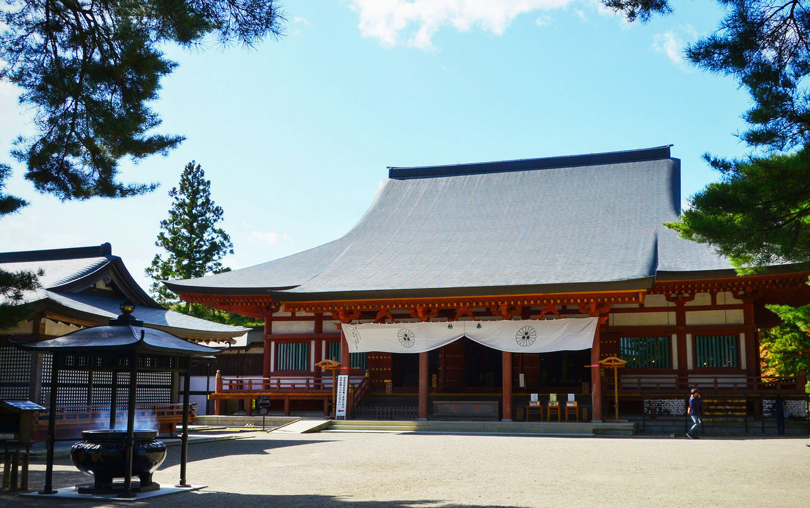
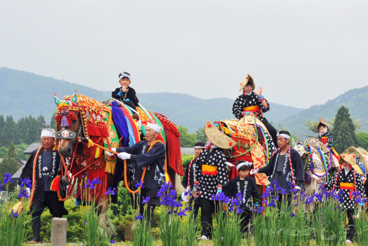
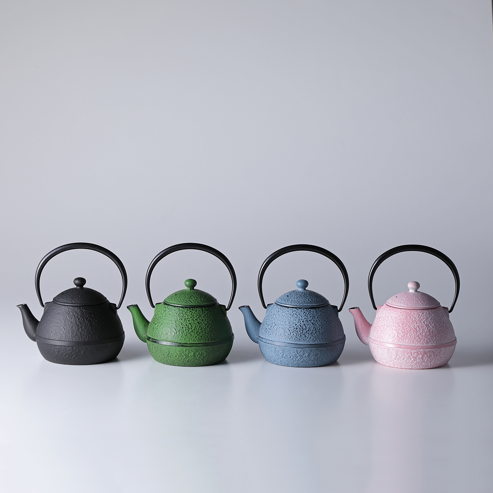

寺伝によると嘉祥3年（850）慈覚大師が東北巡遊のおり、
この地にさしかかると、一面霧に覆われ、一歩も前に進めなくなりました。
ふと足元を見ると、地面に点々と白鹿の毛が落ちておりました。
大師は不思議に思いその毛をたどると、前方に白鹿がうずくまっておりました。
大師が近づくと、白鹿は姿をかき消し、やがてどこからともなく、
一人の白髪の老人が現われ、この地に堂宇を建立して霊場にせよと告げました。
大師は、この老人こそ薬師如来の化身と感じ、一宇の堂を建立し、嘉祥寺と号しました。
これが毛越寺の起こりとされます。

年6月に行われる「蒼前様」を信仰とするお祭で、100頭ほどの馬が、滝沢市の蒼前神社から盛岡市の八幡宮まで14キロの道のりを行進するお祭です。馬のあでやかな飾り付けとたくさんの鈴が特徴で、歩くたびにチャグチャグと鳴る鈴の音が名称の由来といわれています。
馬の飾りは、大名行列に使われた「小荷駄装束」に端を発するといわれ、色とりどりの装束に身を包んだ馬が行進する様子は圧巻です。また、そのように馬を飾り付けるのは愛馬精神のあらわれともいえるでしょう。
もともと旧暦の5月5日に行われていましたが、農繁期と重なるため昭和33年から新暦の6月15日とされました。平成13年から、6月の第2土曜日に開催されます。また、昭和53年には文化庁から「記録作成等の措置を講ずべき無形の民俗文化財」に選択され、平成8年には、馬の鈴の音が環境省の「残したい“日本の音風景100選”」に選定されています。

南部鉄器の歴史 南部鉄器の産地は盛岡市と奥州市。 盛岡の鉄器は17世紀初め、南部藩主が京都から釜師を招いて茶の湯釜を作らせたのが始まりとされ、奥州の鉄器は、平安時代末期、藤原清衡が近江国から鉄器職人を招き、武具などを作らせたのが始まりとされています。